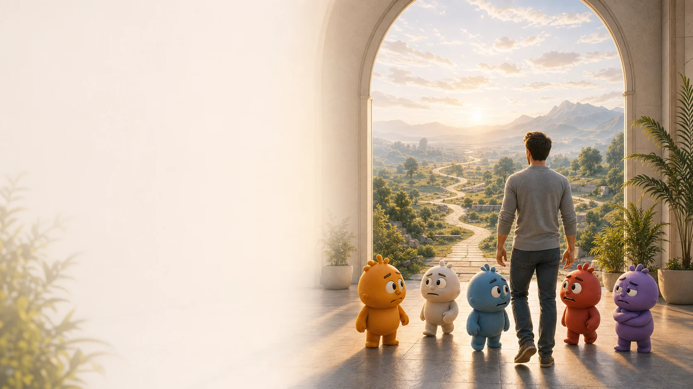
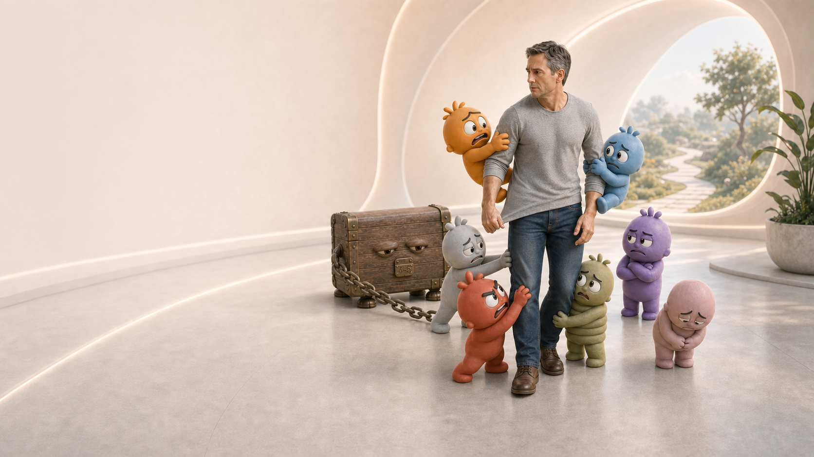

Карта направления
Путь свободы от травм
Когда сильная реакция включается раньше мысли, прошлый опыт начинает выбирать за вас. На этом пути вы сначала осваиваете способ остановить реакцию, затем можете последовательно нейтрализовать то, что продолжает её запускать.

Три программы
Три формата работы с методом остановки автоматической реакции Off-Switch
Все три формата основаны на одном методе остановки автоматической реакции. Они отличаются тем, сколько структуры, обратной связи и личного сопровождения вам нужно сейчас.

самостоятельный формат
Тренинг Off-Switch в записиМетод остановки автоматической реакции
Освоить базовую технику и самостоятельно останавливать уже начавшуюся тревогу, страх, гнев, паническую реакцию или отклик на тяжёлое воспоминание.
Переход от «меня снова захватило» к «я знаю, что делать в этот момент».

групповой маршрут
Off-Switch с Угисом12-недельная групповая программа остановки автоматических реакций
Последовательно нейтрализовать связанные воспоминания, хроническое напряжение и страхи будущего, чтобы прежние триггеры перестали запускать старые реакции.
Переход от отдельных попыток справиться к системной работе со всей цепочкой.

индивидуальный маршрут
Off-Switch 1:1 с УгисомИндивидуальная программа остановки автоматических реакций
Работать непосредственно с автором метода: нейтрализовать реакцию, найти поддерживающий механизм и перестроить паттерн, который продолжает создавать проблему.
Переход от реакции, управляющей сном, голосом, решениями и отношениями, к индивидуально спроектированному изменению.
Как выбирать
Ориентируйтесь на степень поддержки
Метод остановки автоматической реакции один. Отличаются глубина задачи и объём сопровождения.
Когда нужна техника для одной реакции
Когда нужна техника для конкретной реакции и вы готовы регулярно практиковать сами.
Тренинг Off-Switch в записи с Угисом в группеКогда нужен системный маршрут
Когда проблема состоит из нескольких связанных эпизодов и нужен 12-недельный ритм системной работы.
12-недельная группа лично с УгисомКогда нужен личный порядок работы
Когда одна проблема затрагивает несколько областей жизни и нужен индивидуально спроектированный порядок изменений.
Off-Switch 1:1 с Угисом